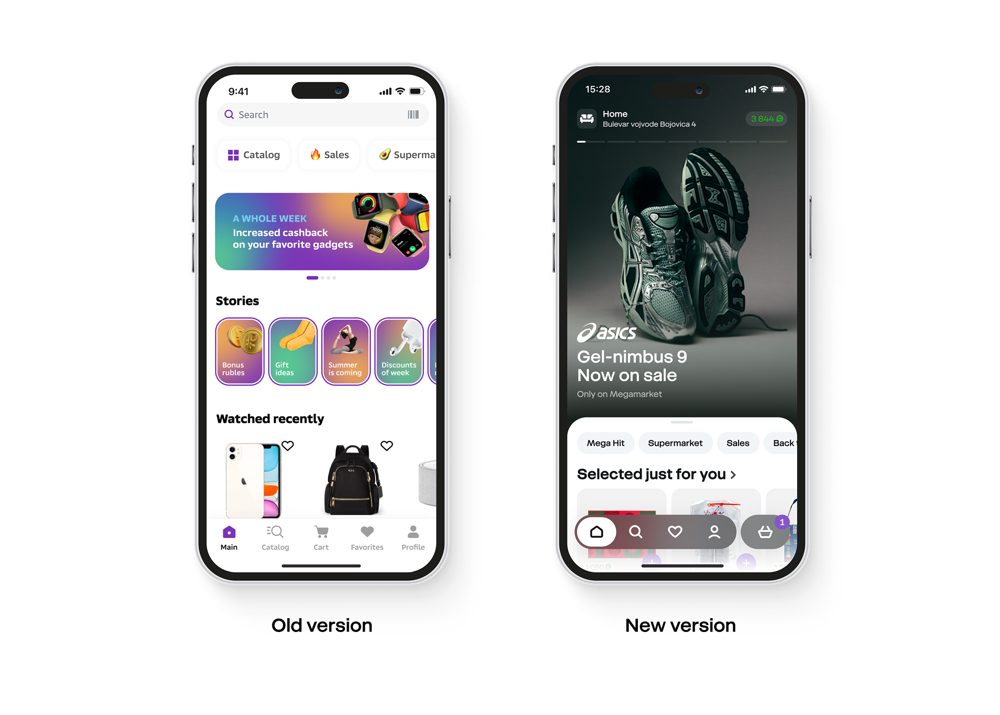
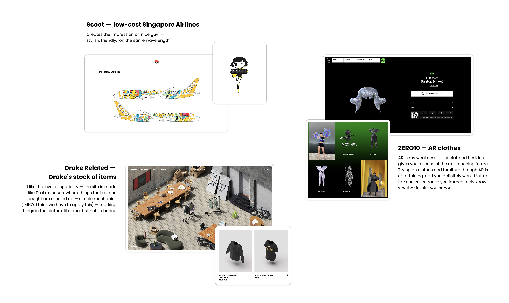

Megamarket
The journey of rethinking the marketplace
Situation
Outdated UI and generic UX
The marketplace had been grown fast by attracting users for high cashbacks and discounts, but UI was outdated and UX was too generic. It didn't reflect the specifics of different categories like fashion, beauty, FMCG, etc, which made it hard to scale and it affected conversion.

Task
Rethinking the customer's experience
My task was to build a consistent and the same time flexible system — something scalable, but still unique for each category. It wasn't just about visuals — it was a full rethinking of how customers interact with the marketplace.
Actions
Action 01
Visual Language
The first step was to collect inspiring products in terms of user interface, communication, and positioning, explaining exactly what I liked and wanted to use as a basis for the visual language and design principles of our new marketplace.

Outcome
Vibe "we are on the same wavelength"
Create your own atmosphere where you can feel "yourself/calm/safe", so that you spend an endless amount of time (and spend your money).
Balance consistency and product diversity
Completely remove all the "dirt" on the marketplaces — no freedom for sellers. We create a tool — seller puts their product in the tool and it automatically adjusts to our guides.
More spaciousness
3D models, marking in space/in a photo, without borders/frames, seamless interactive, AR. So that you can get stuck in a separate full-fledged world (and spend your money).
Action 02
Design Principles
After searching for a visual language, I moved on to defining design principles to determine what would set us apart from competitors in our niche and what our value would be to the user. Together with the design director and the main product owner, I conducted a workshop, as a result of which we determined the basic principles and values of our future product.